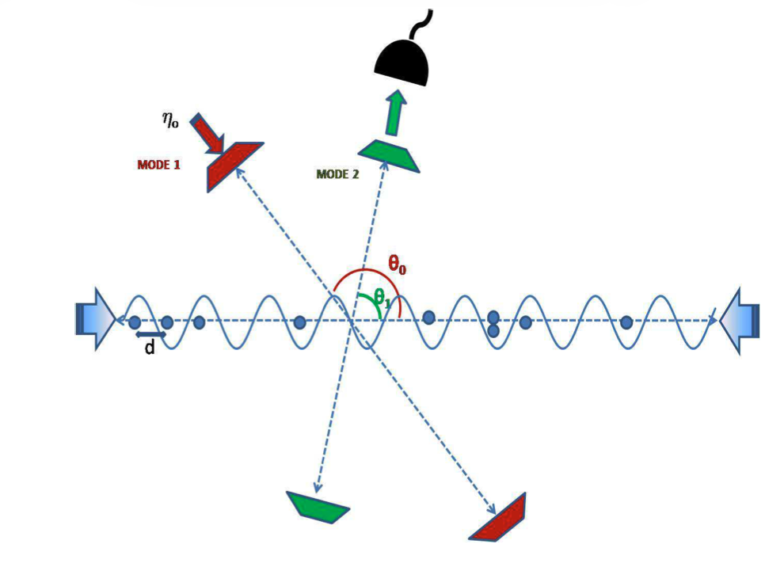
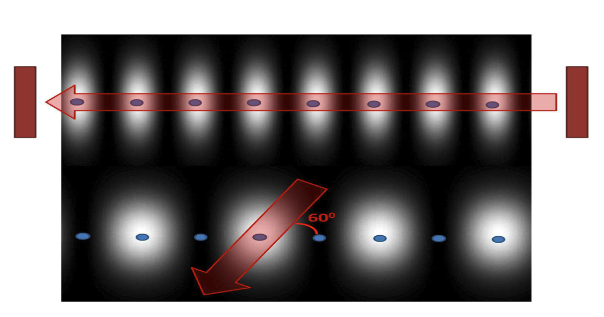
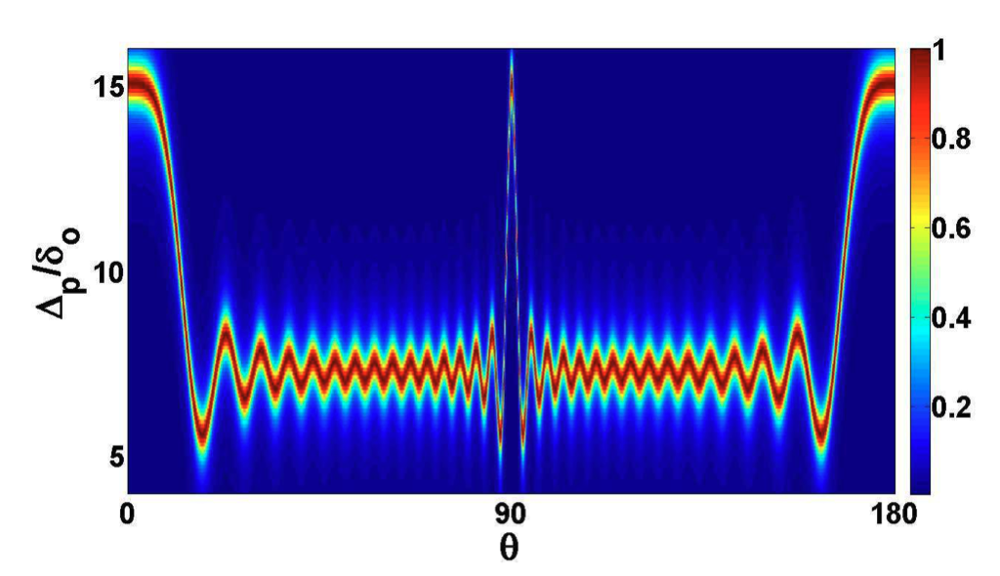
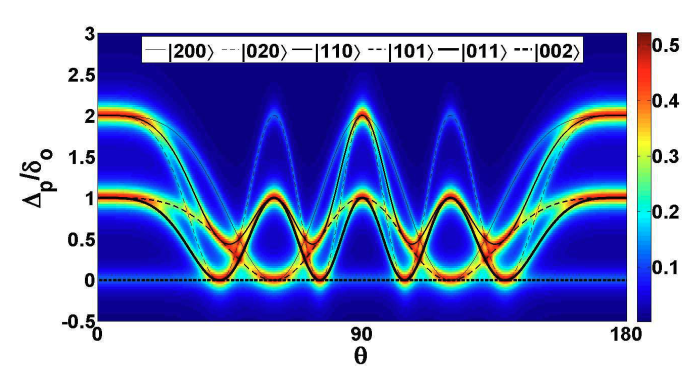

My Journey with the Natural World: From Passion to Practice
Contributed to the physics department’s school outreach programme at Virginia Tech, bringing hands-on demonstrations to local middle and high school students. Demonstrations included the Doppler effect and resonance in pipes: open and closed tubes of different lengths, showing how boundary conditions determine the frequencies a tube can sustain.
The connection to musical instruments is direct. An open pipe — open at both ends, like a flute — supports all harmonics, giving a bright, full sound. A closed pipe — sealed at one end, like a clarinet — supports only odd harmonics, producing a rounder, more hollow timbre. The same physics that determines which notes a pipe can produce also determines the character of every woodwind instrument.

For my masters thesis, I worked in quantum many-body systems and the work was awarded the Best Masters of Science Thesis Award (2012) and a publication in Physical Review A - Agarwala, A., Nath, M., Lugani, J., Thyagarajan, K., and Ghosh, G. (2012) Fock-space exploration by angle resolved transmission through a quantum diffraction grating of cold atoms in an optical lattice, Physical Review A, 85(6), 063606. One of the plots was also selected for the Physical Review A Kaleidoscope (June 2012) feature based on the aesthetic quality of the graphics.
For summer projects, I worked on Quantum Information Theory and Renormalisation Group. For one of these, I was selected for the Visiting Students Programme (VSP) in Physics 2012 at Harish-Chandra Research Institute (HRI), India, a premier research institute funded by the Department of Atomic Energy, Government of India, to conduct research in quantum information theory with Prof. Arun K. Pati.
Masters Thesis: Study of Cold Atomic Condensates by Atom-Photon Interactions
Researchers have developed a technique to measure ultra-cold atoms in an optical lattice without destroying the quantum state of the atoms for repeated analysis. The light transmission from these systems is used to determine the precise arrangement and quantum behaviour of the atoms.
- Developed a computational framework in MATLAB for probing quantum many-body states of ultracold atoms in optical lattices using angle-resolved light transmission measurements, demonstrating that confined atoms act as quantum diffraction gratings.
- Calculated dispersive shifts in cavity resonance caused by atomic presence, establishing a direct proportionality between resonance shift and atom count in illuminated sites for systematic quantum state characterisation.
- Generated transmission spectra across Mott Insulator and Superfluid phases, establishing a non-destructive approach for probing Fock-space structure in few-body correlated quantum systems.
The figure on the left shows a schematic diagram of the experimental setup for cold atoms in an optical lattice loaded in a cavity, for standing wave solutions.
The optical lattice is created from two counter propagating laser beams and has a site spacing of length \(d\).
The two standing wave cavity modes, \(MODE 1\) and \(MODE 2\) are at angles \(\theta_0\) and \(\theta_1\) with the axis of the optical lattice respectively.
The schematic on the right shows the way atoms are present at the intensity maxima regions of the cavity mode when the optical lattice is illuminated at 0°.
Changing the angle by 60° results in the decrease of the number of illuminated sites to half.
   
Summer Project (Jun - Jul 2012): Quantum Information Conservation - The No-Hiding Theorem
The No-Hiding Theorem states that quantum information cannot be created or destroyed, but can only be transferred between the system and its environment. It was proven by Samuel L. Braunstein and Arun K. Pati in 2007 and has implications for quantum teleportation, state randomization, and the black hole information paradox. This summer project involved theoretical analysis and numerical verification of the theorem, including perfect and imperfect hiding scenarios. Letter of Completion ↗
- Studied the No-Hiding Theorem through theoretical analysis and numerical verification, confirming that quantum information cannot be created or destroyed but only redistributed between system and environment.
- Analysed perfect hiding scenarios where information transfers completely to ancilla states without entanglement.
- Quantified information distribution in imperfect hiding cases using correlation measures implemented in MATLAB.
Summer Project (May - Jul 2011): Renormalisation Group Study of Liénard Systems
The Renormalisation Group (RG) is a mathematical framework used to study the behaviour of physical systems at different scales. It is particularly useful in understanding critical phenomena and phase transitions. This summer project involved applying RG techniques to Liénard systems, which are a class of nonlinear differential equations that describe various physical phenomena.
I worked with Dr. Dhruba Banerjee, Jadavpur University, Kolkata, India Letter of Completion ↗
- Applied RG methods to analyse limit cycle behaviour in nonlinear dynamical systems, working within the framework of Hilbert's sixteenth problem on limit cycles in polynomial differential equations.
- Derived amplitude equations for generalised Liénard systems using perturbative renormalisation group techniques; determined limit cycle existence and stability by analysing fixed points and eigenvalues of the amplitude equations.
- Validated theoretical predictions through computational analysis in Mathematica, generating phase portraits and limit cycle trajectories across parameter space.